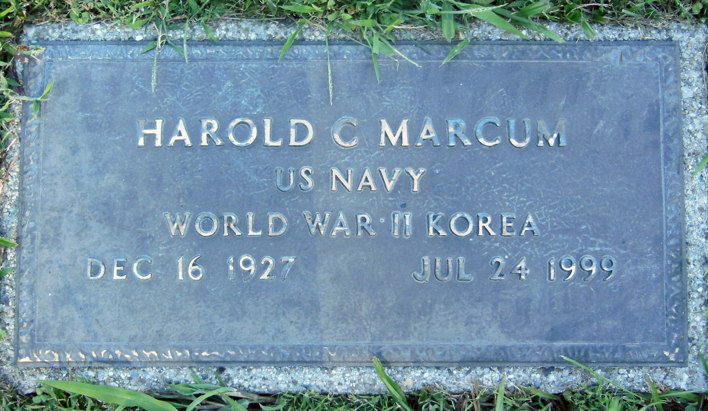

Harold C. Marcum
16 December 1927 – 24 July 1999
Quick Facts
Immediate Family
Spouses
Children
- Beverly Jane Marcum (born 5 March 1956)
- Deborah Marcum (Etta obituary form; possibly “Deb Marcum” in FamilySearch)
- Alton Marcum
- Douglas Marcum
- William Marcum
- Ronald Marcum
- Michael Lee Marcum (1962–1989)
Siblings
- Ralph E. Marcum (1926–1927)
- Hiram C. Marcum (1929–1929)
- William K. Marcum (1930–1932)
- Lois K. Marcum (1932–1933)
- Mary Elizabeth Marcum Mullins (1936–1989)
- Beverly J. Marcum (1938–1945; infant sister, distinct from daughter Beverly)
- Jarvis E. Marcum (1941–1967)
Family Relationship Notes
Identity and parents: The 1970 obituary calls Etta wife of “Harold Marcum” and names their seven children. Beverly’s 1982 Hamilton County marriage license, summarized on her profile from the original, names her father Harold C. Marcum and mother Etta F. McFadden. Find a Grave and a compiled FamilySearch profile give Harold’s expanded name as Harold Clayton; his own marker reads Harold C. Marcum. These records strongly connect the Gen VI profile to Harold Clayton Marcum, though original birth/marriage records have not been inspected here.
Parents: Find a Grave family lists link Hiram Marcum and Bertha Owens Marcum as Harold Clayton’s parents; Hiram and Bertha memorials both list Harold among their children. This is a strong working Gen VII assignment, but remains derivative. Harold’s Find a Grave narrative contains a conflict (“son of Harold Marcum and Bertha Owens”), whereas its linked parent fields say Hiram. The profile uses Hiram and Bertha as the working couple and records the error explicitly.
Children: Etta’s 1970 obituary names Deborah, Beverly, Alton, Douglas, William, Ronald and Michael Marcum. Only Beverly is matched to Rick’s existing profile using the 1982 marriage license; Michael’s public FamilySearch profile says his parents were Harold Clayton Marcum and Etta Fay McFadden. FamilySearch lists a sister “Deb Marcum”; possible correspondence with obituary Deborah is not proven. The other child names are kept as printed and have no separate profiles.
Siblings: Find a Grave links Harold with seven siblings, including Beverly J. Marcum (1938–1945). This infant sister is not his daughter Beverly (born 1956); keep the two distinct.
On Family Tree Sites
Person Archive & Couple Folder
Life Timeline
16 December 1927 · Born in Dwarf, Perry County, Kentucky, according to Find a Grave.
At least by 1970 · Etta’s obituary calls him husband and lists seven children.
24 July 1999 · Died in Hamilton County, Ohio; buried Hopewell Cemetery, per Find a Grave.
Life Story
Harold Clayton Marcum was born in Perry County, Kentucky, in 1927 and died in Hamilton County, Ohio, in 1999, according to Find a Grave. His grave marker identifies him as a U.S. Navy veteran of World War II and Korea. The 1970 obituary of Etta calls him her husband and lists seven Marcum children. Beverly’s original 1982 marriage license names her father as Harold C. Marcum and her mother as Etta F. McFadden, tying the family to this Gen VI couple. A public FamilySearch profile for Michael Lee Marcum also identifies Harold Clayton and Etta Fay as parents. The working parent assignment to Hiram and Bertha is based on linked memorial family groups and remains subject to original-record confirmation.
Photo Gallery


Sources and Evidence
- Hamilton County, Ohio, Marriage Records, Vol. 28, p. 1742, Hamilton County Probate Division — Dell Michael Fields and Beverly Jane Marcum, married 21 August 1982. Read directly from the original image. The license names Harold C. Marcum and Etta F. McFadden as the bride’s parents.
- Find a Grave memorial 134903781: full name Harold Clayton Marcum; dates, burial and linked family group.
- Harold photo tab: U.S. Navy WWII/Korea grave marker.
- FamilySearch Memories, “Obituary for Etta Marcum,” scan dated 8 July 1970; local transcription and stitched scan are archived.
- FamilySearch compiled profile for Michael Lee Marcum (1962–1989), which names Harold Clayton and Etta Fay as parents; user-contributed/compiled data, not a primary record.
- Beverly Jane Marcum’s live profile records the directly reviewed 1982 Hamilton County marriage license naming Harold C. Marcum and Etta F. McFadden as parents.
- Father Hiram Marcum’s dated headstone (Find a Grave photo by SWF); included as parent-family evidence.
- Mother Bertha Owens Marcum’s dated headstone (Find a Grave photo by SWF); included as parent-family evidence.
Research Notes and Open Questions
- Find a Grave gives Harold Clayton Marcum, 16 Dec 1927–24 Jul 1999, and his marker says U.S. Navy, World War II, Korea. No original service, birth, death, or marriage records were reviewed in this turn.
- Etta’s 1970 obituary directly identifies her as Harold’s wife and names seven children; Beverly’s 1982 marriage license confirms Harold C. and Etta F. as Beverly’s parents. No civil marriage date for Harold and Etta located.
- Find a Grave’s 1940 marriage year for Harold and Etta is impossible given their 1927 birth years; it is rejected.
- Harold’s memorial narrative says his parents were “Harold Marcum and Bertha Owens,” but that page’s own linked family fields name Hiram Marcum and Bertha Owens. Hiram and Bertha’s memorials link Harold as a son, so Hiram is the working Gen VII father, with the contradiction preserved.
- The obituary calls one child Deborah; the FamilySearch profile for Michael lists sibling “Deb.” Possible same person, unresolved.
- Harold’s infant sister Beverly J. (1938–1945) is distinct from his daughter Beverly Jane (born 1956).
DNA
No DNA matches linked yet.
Family Notes
No family-notes link is listed on this profile.
Profile created 17 November 2026 from Dell Michael Fields and Beverly Jane Marcum's 1982 Hamilton County marriage license (Vol. 28, p. 1742), read from the original image.